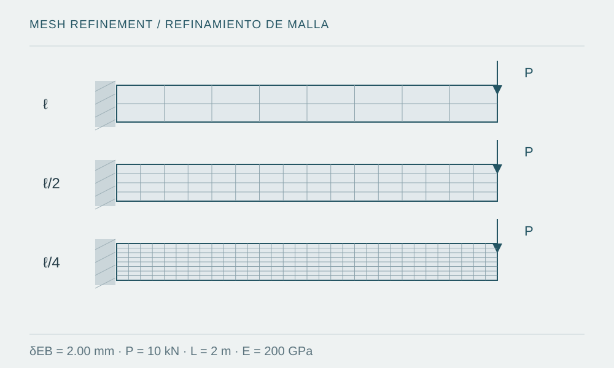

A practical framework for checking what a finite-element model represents and what convergence actually establishes.

Figure provenance
- Source
- Original vector illustration prepared for this note.
- Tool
- SVG
- Date
- 2026-10-08
- Description
- Three conceptual mesh densities for a cantilever with the same loading and support condition.
- Usage
- Original educational diagram; not a software screenshot or project evidence.
Introduction
Before meshing, define the quantity that will answer the engineering question: global displacement, contact force, plastic strain or a localized stress. Each requires a different representation and review. A smooth contour image does not establish accuracy; it may reflect extrapolation, nodal averaging or a plotting scale that hides differences. The model should remain explainable without that image.
The problem: convergence has several meanings
Iterative convergence concerns equilibrium of an increment for a particular discretization. Mesh convergence examines how a quantity changes as that discretization is refined. Validation compares the physical representation with independent evidence. Passing one of these checks does not replace the others.
SIMULIA technical resources recommend investigating diagnostic messages and relating them to model regions and features [1]. Reducing the minimum increment size may allow a solution to continue, but it does not by itself correct an incompatible restraint, incorrectly specified material or contact definition representing a different mechanism.
Development: four decisions to document
Geometry and elements: explain the use of beams, shells or solids; review thickness, integration and the dominant response. The mesh should capture gradients of interest with appropriate size transitions. The official mesh-convergence resource recommends tracking changes in results during refinement [3], rather than treating an element count as sufficient evidence.
Material: record units, property sources, the strain range and relevant temperature or rate dependence. Inputs required by a plasticity or damage law are not interchangeable with arbitrary test curves; SIMULIA specifically discusses interpretation after necking [4].
Restraints and solution: represent degrees of freedom, supports and contact according to the physical mechanism, avoiding unintended rigid-body modes and overconstraint. Abaqus/Standard and Abaqus/Explicit use different solution strategies; obtaining an Explicit solution does not remove the need to assess stability, inertia and energy balances. Official resources [1–2] help distinguish these issues.
Conceptual example with an analytical reference
Consider a prismatic elastic cantilever with L = 2 m, b = 0.10 m, h = 0.20 m, E = 200 GPa and a transverse tip force P = 10 kN. Euler–Bernoulli theory, neglecting shear deformation, gives I = 6.667 × 10⁻⁵ m⁴ and tip displacement δ = 2.00 mm.
This is an analytical reference, not an executed simulation. A future study could compare three meshes while preserving material, loading and supports. If solid elements are used, differences from the beam idealization must be recognized; stresses near the clamp also require review without mistaking idealization singularities for physical failure. In the refinement expression, ℓ is mesh size and q is the quantity of interest, with a nonzero denominator.
Common mistakes
- Refining the mesh while simultaneously changing element type, material and support conditions.
- Using the maximum averaged nodal stress as the sole indicator, particularly near idealized discontinuities.
- Accepting artificial energy or stabilization without quantifying its influence on response.
- Publishing a magnified deformed shape without stating its scale or distinguishing it from actual geometry.
Conclusion and scope
A reviewable deliverable should record the Abaqus release used, inputs, formulation, meshes compared, solution criteria and balances. This note does not prescribe release-specific settings or present software results: it develops a general method and an educational example. Official SIMULIA sources were reviewed on 8 October 2026.
Sources and references
- Dassault Systèmes / SIMULIA — Debugging Abaqus Models (official technical resource, not a code edition; accessed 2026-10-08)
Vendor resource for model diagnostics. Specific settings should be checked against documentation for the Abaqus release used.
- Dassault Systèmes / SIMULIA — Contact and Convergence in Abaqus/Standard (official technical resource; accessed 2026-10-08)
Official vendor technical resource on contact and convergence. It is neither a design standard nor a record of a simulation performed for this note.
- Dassault Systèmes / SIMULIA Community — Strain Jumps: mesh convergence (official technical resource; accessed 2026-10-08)
Technical resource from the official SIMULIA community on strain jumps and mesh convergence.
- Dassault Systèmes / SIMULIA Community — Continuum Damage Mechanics: References (2022)
2022 technical resource with references on damage and material characterization. It does not provide calibrated data for a project in this portfolio.